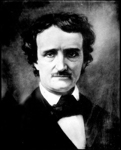

Edgar Allan Poe, born on January 19, 1809, in Boston, Massachusetts, was an American writer and poet whose works have had a profound and lasting impact on literature. Poe's life was marked by tragedy and hardship, which greatly influenced his writing style and themes.

He was orpahaned after the death of his parents and adopted by John Allan, whose name he was given. Poe's work as a writer was greatly marked by his own life experiences; his expulsion from college, and trouble with his foster parents; his marriage to the young Virginia Clemm and the love that was never meant to be in his childhood sweetheart Sarah Royster; his experience in the military and numerous jobs in the writing industry; and finally, the death of Virginia Clemm and his alcoholism that eventually led to his own death.
Poe is undoubtedly a master of the short story and is also considered to be the inventor of the modern detective story. In addition to this, his renditions of the gothic style and profound insights into the human psyche has made him one of most prolific and influential writers to have ever lived. Some of his works stand out more than others, and anyone that has ever had the pleasure of reading Poe's work will no doubt hold their own opinions on which stories are the best. I have selected a few that have left an impression on me and done brief review of each in the following section.
Landor's Cottage

The Assignation
Lionizing